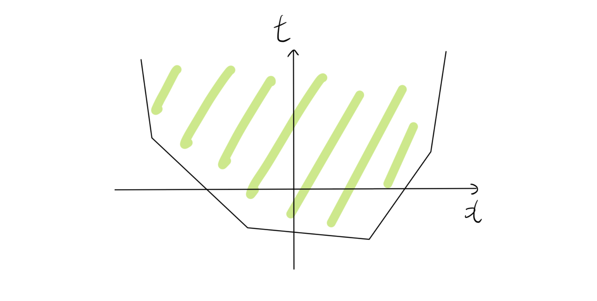
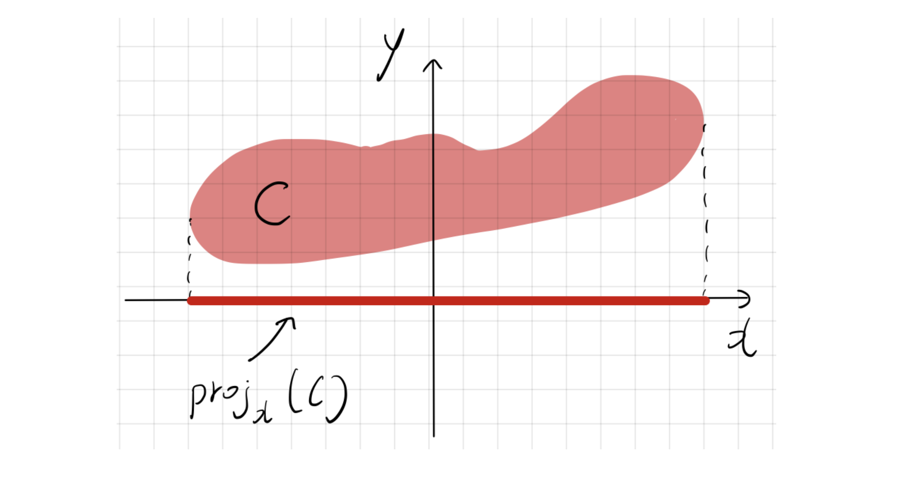

1. Motivation: 군집의 중심 찾기 (Center of a Cluster)
- 의사결정 문제에서 어떤 최적화 문제들이 선형 계획법으로 모델링될 수 있을까요? 일반적인 최적화 문제는 다음과 같은 형태를 가집니다.
\[ \begin{aligned} \min_{x} \quad & f(x) \\ \text{s.t.} \quad & g_i(x) \le 0, \quad i \in [m] \\ & x \in \mathbb{R}^d \end{aligned} \]
만약 목적 함수 \(f\)와 제약 함수 \(g_1, \dots, g_m\)이 모두 선형(Linear)이라면 이 문제는 당연히 LP입니다. 하지만 함수가 비선형이더라도, 우리는 종종 이 문제를 LP로 “재표현”할 수 있습니다.
예를들어, 데이터 포인트 군집 \(V = \{v^1, \dots, v^n\} \subseteq \mathbb{R}^d\) 가 있다고 해봅시다. 우리의 목표는 이 \(n\)개의 벡터들로부터의 거리 \(d(x)\)를 최소화하는 군집의 중심(Center) \(x\)를 찾는 것입니다.

- 중심점을 정하는 기준은 점 \(x\)와 집합 \(V\) 사이의 거리 \(d(x)\)를 최소화하는 것입니다. 즉, 최적화 문제는 다음과 같습니다. \[\min_{x} d(x)\]

- 거리 함수 \(d(x)\)를 어떻게 정의하느냐에 따라 다음 네 가지 최적화 문제를 생각할 수 있습니다:
- \(\ell_1\)-거리의 합: \(d(x) = \sum_{i \in [n]} \|x - v^i\|_1\)
- \(\ell_\infty\)-거리의 합: \(d(x) = \sum_{i \in [n]} \|x - v^i\|_\infty\)
- \(\ell_1\)-거리의 최댓값: \(d(x) = \max_{i \in [n]} \|x - v^i\|_1\)
- \(\ell_\infty\)-거리의 최댓값: \(d(x) = \max_{i \in [n]} \|x - v^i\|_\infty\)
- 벡터의 Norm이나 Max 연산은 명백히 비선형(Non-linear) 함수입니다. 그럼에도 불구하고, 이 문제들은 모두 선형 계획법으로 변환할 수 있습니다. 이를 가능하게 하는 핵심 개념이 바로 선형 표현 가능성(Linear Representability)입니다.
2. 선형 표현 가능 함수 (Linearly Representable Functions)
2.1. 에피그래프(Epigraph)와 선형 표현의 정의

- 함수 \(f: \mathbb{R}^d \rightarrow \mathbb{R}\)의 에피그래프(Epigraph)는 함수의 그래프 위쪽에 놓인 점들의 집합으로 정의됩니다.
\[ epi(f) = \{(x, t) \in \mathbb{R}^d \times \mathbb{R} : f(x) \le t\} \subseteq \mathbb{R}^{d+1} \]
- 어떤 함수 \(f\)가 선형 표현 가능(Linearly representable)하다는 것은, 그 에피그래프가 유한 개의 선형 부등식 시스템으로 표현될 수 있음을 의미합니다. \[
epi(f) = \left\{ (x, t) \in \mathbb{R}^d \times \mathbb{R} : \exists y \in \mathbb{R}^p \text{ s.t. } Ax + Dy + ht \le r \right\}
\]
- 여기서 \(A \in \mathbb{R}^{l \times d}\), \(D \in \mathbb{R}^{l \times p}\), 그리고 \(h, r \in \mathbb{R}^l\) 입니다.
- 이 선형 부등식 시스템을 만들기 위해 새롭게 도입된 변수 \(y\)를 보조 변수(Auxiliary variables)라고 부릅니다.
- 보조 변수 \(y\)를 포함한 고차원 공간에서 \(Ax + Dy + ht \le r\) 를 만족하는 점들을 모은 뒤 , \((x, t)\) 부분만 추출해낸 것이 \(epi(f)\)가 됩니다.
2.2. [Theorem 3.3] LP 재표현 정리와 증명
정리 (Theorem 3.3):
목적 함수 \(f\)와 제약 함수 \(g_i\)들이 모두 선형 표현 가능하다면, 원래의 비선형 최적화 문제는 선형 계획법으로 재표현될 수 있다.
변환 과정:
- 원래 문제를 에피그래프를 사용하여 다음과 같이 바꿀 수 있습니다.
\[ \begin{aligned} \min_{x, t} \quad & t \\ \text{s.t.} \quad & f(x) \le t \quad \iff \quad (x, t) \in epi(f) \\ & g_i(x) \le 0 \quad \iff \quad (x, 0) \in epi(g_i) \end{aligned} \]
- 이제 각 함수의 선형 표현(보조 변수 \(y, z^1, \dots, z^m\) 도입)을 대입하면 최종적으로 다음과 같은 거대한 LP 형태가 됩니다.
\[ \begin{aligned} \min_{x, t, y, z^1 \dots z^m} \quad & t \\ \text{s.t.} \quad & Ax + Dy + ht \le r \quad \text{(목적 함수 에피그래프 조건)} \\ & A^i x + D^i z^i \le r^i, \quad i \in [m] \quad \text{(각 제약 조건 에피그래프 조건)} \end{aligned} \]
증명 (Proof):
원래의 목표는 \(f(x)\)를 최소화하는 것입니다. 보조 변수 \(t \in \mathbb{R}\)를 도입하면, 이 문제는 \(f(x) \le t\) 라는 제약 조건 하에서 \(t\)를 최소화하는 문제와 완벽히 동치입니다. \[\min_{x, t} \{ t : f(x) \le t, g_i(x) \le 0, \forall i \in [m] \}\]
이를 에피그래프의 정의를 이용해 다시 쓰면 다음과 같습니다. \[\min_{x, t} \{ t : (x, t) \in epi(f), (x, 0) \in epi(g_i), \forall i \in [m] \}\]
\(f\)가 선형 표현 가능하므로, 어떤 \(y \in \mathbb{R}^p\)에 대해 \(Ax + Dy + ht \le r\) 을 만족합니다.
마찬가지로, 각 \(g_i\)도 선형 표현 가능하므로 보조 변수 \(z^i \in \mathbb{R}^{q_i}\)에 대해 다음을 만족합니다. \[epi(g_i) = \{(x, t) : \exists z^i \in \mathbb{R}^{q_i} \text{ s.t. } A^i x + D^i z^i + h^i t \le r^i \}\]
여기서 \((x, 0) \in epi(g_i)\) 이므로 \(t=0\)이 대입되어 \(h^i t\) 항은 사라집니다. 이 모든 조건을 합치면 거대한 선형 계획법이 탄생합니다.
\[ \begin{aligned} \min_{x, t, y, z^1 \dots z^m} \quad & t \\ \text{s.t.} \quad & Ax + Dy + ht \le r \\ & A^i x + D^i z^i \le r^i, \quad i \in [m] \end{aligned} \]
2.3. Example: 비선형 함수의 선형 표현
- \(f(x_1, x_2, x_3) = \max\{x_1, 2x_2 + x_3, 2x_3 - x_1\}\) 이라는 비선형 함수를 봅시다.
- 이 함수의 에피그래프는 \(\max\{\dots\} \le t\) 인 집합입니다.
- 최댓값이 \(t\)보다 작거나 같다는 것은, 괄호 안의 모든 요소가 \(t\)보다 작거나 같다는 것과 동치입니다.
\[x_1 \le t, \quad 2x_2 + x_3 \le t, \quad 2x_3 - x_1 \le t\]
- 따라서 \(epi(f)\)는 위 세 개의 선형 부등식으로 표현되므로, 이 함수는 선형 표현 가능합니다.
3. 보조 변수와 사영 (Projection)

- 선형 표현식에 등장하는 보조 변수 \(y\)는 기하학적으로 사영(Projection)이라는 깊은 의미를 갖습니다.
- 공간 \(\mathbb{R}^d \times \mathbb{R}^p\) 에 있는 집합 \(C\)의 \(x\) 공간(\(\mathbb{R}^d\))으로의 사영은 다음과 같이 정의됩니다.
\[proj_x(C) = \{ x \in \mathbb{R}^d : \exists y \in \mathbb{R}^p \text{ s.t. } (x, y) \in C \}\]
이를 “\(y\) 변수들을 투영하여 없앤다(Projecting out)”고 합니다.
다시 에피그래프로 돌아가 보겠습니다. 변수 \((x, y, t)\)가 이루는 다면체 \(P = \{(x, y, t) : Ax + Dy + ht \le r\}\) 가 있습니다. \(epi(f)\)는 단순히 이 다면체 \(P\)에서 \(y\) 변수들을 무시하고 \((x, t)\) 공간으로 사영시킨 결과입니다. 즉, 에피그래프가 다면체의 사영이라면 그 함수는 선형 표현이 가능합니다.
그렇다면 다면체의 사영은 항상 다면체일까요?
- 네, 그렇습니다. 이를 대수적으로 증명하는 알고리즘이 바로 Fourier-Motzkin 소거법입니다.
3.1. [Theorem 3.5] Fourier-Motzkin Elimination
정리 (Theorem 3.5): 다면체의 사영은 여전히 다면체이다.
보조 변수를 기하학적으로 사영시키는 과정을 대수적으로 수행하는 방법이 바로 Fourier-Motzkin 소거법입니다. 연립 선형 부등식에서 특정 변수(예: \(y_1\))를 없애는 과정으로, 다면체의 사영 역시 다면체임을 대수적으로 증명하는 핵심 원리입니다.
목표 변수 \(y_1\)을 소거하기 위해, 부등식 시스템 \(Ax + Dy + ht \le r\) 의 \(i\)번째 행을 다음과 같이 \(y_1\)을 기준으로 정리해 봅니다.
- 여기서 \(y_{-1}\)은 \(y_1\)을 제외한 나머지 \(y\) 변수들을 의미합니다.
\[D_{i1} y_1 \le r_i - A_i x - D_{i,-1} y_{-1} - h_i t\]
- 이제 양변을 \(y_1\)의 계수인 \(D_{i1}\)으로 나누어야 하는데, 나누는 값의 부호에 따라 부등호의 방향이 달라지므로 전체 부등식을 세 그룹으로 나눕니다:
- \(I_+\) 그룹 (\(D_{i1} > 0\)): 양수로 나누므로 부등호 방향이 유지되며, \(y_1\)에 대한 상한(Upper bound, 천장)을 제공합니다. \[y_1 \le \frac{r_i - A_i x - D_{i,-1} y_{-1} - h_i t}{D_{i1}} \quad \text{for } i \in I_+\]
- \(I_-\) 그룹 (\(D_{j1} < 0\)): 음수로 나누므로 부등호 방향이 반대로 뒤집히며, \(y_1\)에 대한 하한(Lower bound, 바닥)을 제공합니다. (인덱스를 \(j\)로 표기) \[y_1 \ge \frac{r_j - A_j x - D_{j,-1} y_{-1} - h_j t}{D_{j1}} \quad \text{for } j \in I_-\]
- \(I_0\) 그룹 (\(D_{i1} = 0\)): \(y_1\)이 아예 포함되지 않은 식들입니다.
- 이제 \(y_1\)이 존재하기 위한 조건은 명확합니다. 모든 하한(바닥)보다는 크거나 같아야 하고, 모든 상한(천장)보다는 작거나 같아야 합니다. \(j \in I_-\)인 식과 \(i \in I_+\)인 식을 짝지어(Pairing) 가운데에 \(y_1\)을 두면 다음을 얻습니다:
\[ \frac{r_j - A_j x - D_{j,-1} y_{-1} - h_j t}{D_{j1}} \le y_1 \le \frac{r_i - A_i x - D_{i,-1} y_{-1} - h_i t}{D_{i1}} \]
- 여기서 가운데의 \(y_1\)을 매개로 양 끝단을 직접 연결하면, \(y_1\)이 완전히 소거된 새로운 부등식을 얻게 됩니다.
\[ \frac{r_j - A_j x - D_{j,-1} y_{-1} - h_j t}{D_{j1}} \le \frac{r_i - A_i x - D_{i,-1} y_{-1} - h_i t}{D_{i1}} \]
이 짝짓기 과정을 \(I_+\)와 \(I_-\) 그룹의 모든 가능한 조합에 대해 수행하고, 원래부터 \(y_1\)이 없었던 \(I_0\) 그룹의 식들과 합치면 \(y_1\)이 투영되어 완벽히 제거된 새로운 연립 부등식 세트가 완성됩니다.
이 과정을 모든 보조 변수 \(y\)에 대해 반복하면 최종적으로 \(x, t\)에 대한 유한 개의 부등식(즉, 에피그래프)만 남게 되며, 이를 통해 다면체의 사영이 여전히 다면체임을 증명할 수 있습니다.
4. 자주 쓰이는 선형 표현 가능 함수와 보존 연산
- 절댓값 (Absolute value): \(f(x) = |x|\). \(|x| \le t \iff -t \le x \le t\). \(epi(f) = \{(x, t) : -t \le x \le t\}\)
- 볼록 조각적 선형 함수 (Convex piecewise linear): \(f(x) = \max_{i \in [n]} \{ c_i^\top x + d_i \}\). \(epi(f) = \{(x, t) : c_i^\top x + d_i \le t, \forall i \in [n]\}\)
- \(\ell_\infty\)-norm: \(f(x) = \|x\|_\infty = \max_{j \in [d]} |x_j|\). \(|x_j| \le t \iff -t \le x_j \le t \quad \forall j \in [d]\).
- \(\ell_1\)-norm: \(f(x) = \|x\|_1 = \sum_{j \in [d]} |x_j|\). 이 경우 보조 변수 \(s_1, \dots, s_d \in \mathbb{R}\) 이 필요합니다. 각 절댓값의 상한을 \(s_j\)로 둡니다. \(-s_j \le x_j \le s_j \quad \forall j \in [d]\), 그리고 \(\sum_{j \in [d]} s_j \le t\).
4.1. [Theorem 3.6] 선형 표현 가능성을 보존하는 연산
- 선형 표현 가능한 함수들을 블록처럼 조립하여 더 복잡한 함수를 만들어도, 그 성질이 그대로 보존되는 마법 같은 연산들이 있습니다.
정리 (Theorem 3.6): \(f_1(x), \dots, f_n(x)\) 가 선형 표현 가능하다면 다음이 성립한다.
비음수 가중치 합 \(\sum_{i \in [n]} \alpha_i f_i(x)\) (\(\alpha_i \ge 0\)) 은 선형 표현 가능하다.
점별 최댓값(Point-wise max) \(\max_{i \in [n]} f_i(x)\) 은 선형 표현 가능하다.
증명 (Proof):
- 가중치 합:
- 합을 선형화하기 위해 보조 변수 \(s \in \mathbb{R}^n\)을 도입합니다.
- \(\sum \alpha_i f_i(x) \le t\) 는 “어떤 \(s_i\)들이 존재하여 \(\sum \alpha_i s_i \le t\) 이고, 각 \(f_i(x) \le s_i\) 이다” 로 바꿀 수 있습니다.
- \(f_i(x) \le s_i\) 는 곧 \((x, s_i) \in epi(f_i)\) 를 의미하며, \(epi(f_i)\)가 선형 부등식 시스템이므로 이를 결합한 전체 에피그래프 역시 선형 시스템이 됩니다.
- 최댓값:
- \(\max f_i(x) \le t\) 는 모든 \(i\)에 대해 \(f_i(x) \le t\) 와 완벽히 동치입니다.
- 즉, \((x, t) \in epi(f_i)\) 가 모든 \(i\)에 대해 성립하므로, 개별 에피그래프들의 교집합(선형 부등식들의 단순 나열)이 되어 선형 표현 가능합니다.